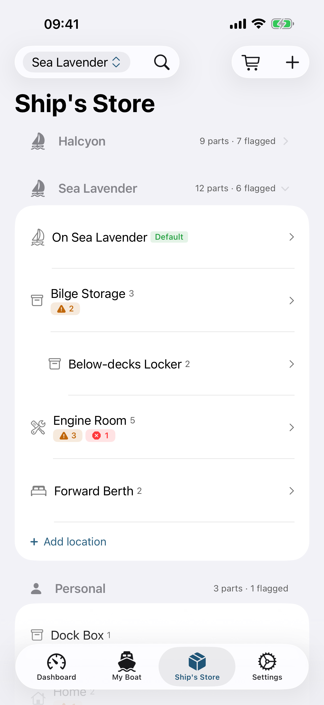
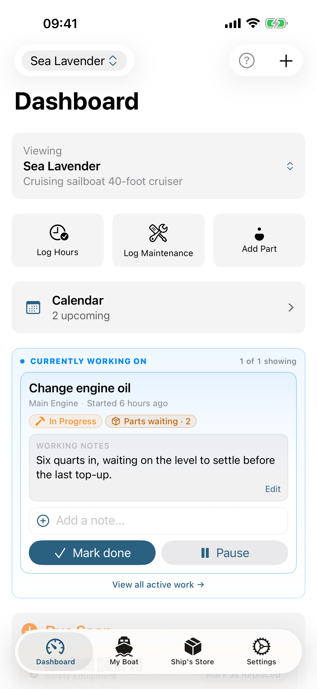
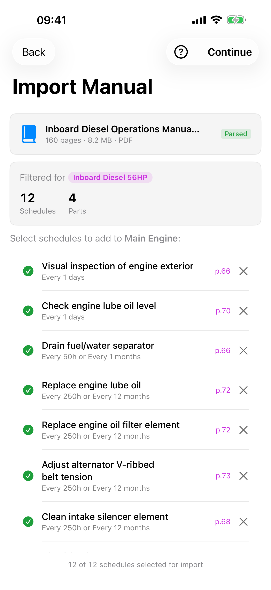
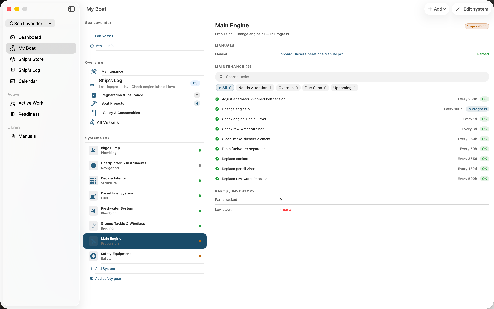

No. 01
THE PROJECT
Owning a boat is a labor of love. Maintenance Crew helps you stay ahead of it — scheduled services, spare parts, and the manuals that tell you when and how — so you spend more time on the water.
Everything stays on your device. No account, no tracking — and we never sell your data.
Annual subscription · Family Sharing · iCloud Sync


Set up oil changes, impeller swaps, zinc rotations, and any other recurring service. Quick-pick chips fill in common intervals. The dashboard surfaces what's overdue, what's in progress, and what's coming up — while everyday "daily basics" stay calm and out of the way.
Catalog parts by name, part number, and supplier. Ship's Store learns how fast you actually burn through each part and flags what to reorder before your next haul — fast-moving spares rise to the top of the list.
PFDs, flares, fire extinguishers, EPIRBs, and batteries get their own schedules and expiry reminders — driven by the printed date or an inspection interval. Safety items are interleaved with maintenance by due date on the dashboard, never buried in a separate list.
Your records live on your device — there's no account to make and nothing of yours on a server we run. We don't track you and we don't run analytics. Turn on iCloud Sync and everything stays current across your own Apple devices, and with the co-owners you invite to a boat.
The Trip Planner and Passage Companion are two halves of the same passage: plan it before you leave, then let the app watch it once you're underway — both reading the same galley, so nothing drifts out of sync between them.
Tell the Trip Planner your crew, your days at sea, and how far you'll be from a resupply. It forecasts every consumable with a use rate against what's aboard and builds a shopping list for anything short.
Tap "We're off" and Passage Companion freezes what's aboard as your departure baseline, then tracks it against how your crew is actually burning through it — no daily logging required. It only speaks up when something's genuinely running short, or it hasn't heard from you in a few days. Fuel is tracked the same way, by engine hours instead of the calendar.
Share a boat and every entry your co-owner logs syncs straight to your own Ship's Log, attributed to them. A brief notice appears the moment they make a change, wherever you're working in the app — and a durable Partner Activity feed on the Dashboard lets you catch up on their full history any time you open it, not just the instant it happens.
A repair that only happens once doesn't need a recurring schedule — create a one-time task with a target date, attach the part it needs, and it lands on your calendar and shopping list like anything else. And when a marina or a border crossing asks for your registration or insurance, it's a couple of taps away, photo included.
However your fuel and water are actually plumbed — two tanks feeding one engine, a heater that only draws from one of them, a jug you bring along just for a long passage — Maintenance Crew models it the way it really is, not a single tank per category.
Trends draws one picture from parts, safety gear, fuel, and water — what a schedule already tells you, sitting right alongside what your crew is actually burning through — so you can see whether real life matches the plan.
On iPhone, Maintenance Crew is a quick check between jobs. On iPad and Mac it opens up into a full three-column workspace — sidebar, list, and detail side by side — so you can plan a season, review a system, and read the manual without losing your place. Every section opens to something worth looking at, not an empty pane, and picks up right where you left off next time. The same records, synced across every device you own — and, when you share a boat, with your crew.

One annual subscription covers iPhone, iPad, and Mac, with Family Sharing and iCloud Sync. See current pricing on the App Store.